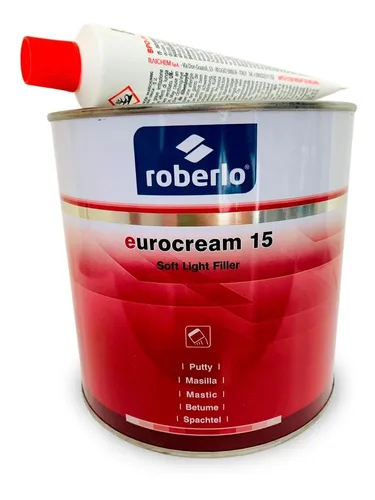

Masillas
Las masillas Roberlo son un referente en todo el mundo gracias a su comodidad de aplicación y facilidad de lijado. Esta amplia gama permite ofrecer soluciones para cualquier tipo de aplicación.
- Eurocream 15 
Masilla de poliéster suave y ligera 2k, elevado poder de relleno y muy fácil de lijar. Ideal para usarla sobre chapa de acero, aluminio o poliéster, obteniendo excelentes características de adhesión